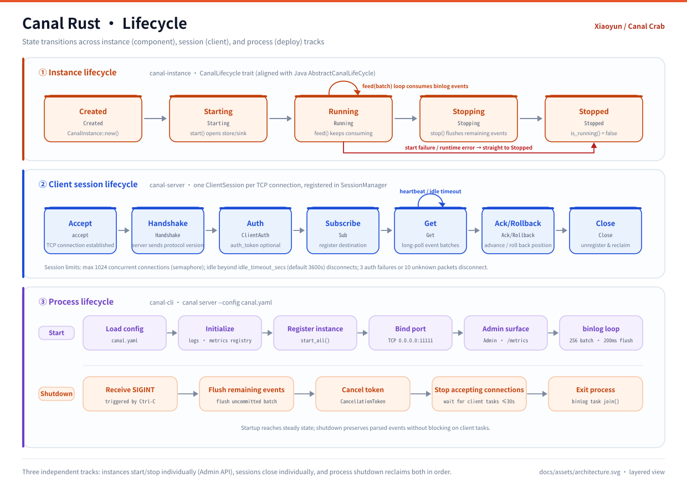

Project / About
A data canal,
kept by a crab.
Canal Rust emulates the MySQL slave protocol, sends dump requests to the master, parses binary log events and serves them to downstream consumers over protobuf. It keeps Java Canal's wire protocol and swaps the runtime for Rust.
01 / OVERVIEW
One change,
delivered end to end.
MySQL keeps producing changes upstream; downstream consumers can fall behind. Something in the middle has to control the flow, keep events and confirm delivery. Canal Rust splits the job into 14 crates, each independently testable.
Canal Rust is not another CDC product. It is a deliberately restrained rewrite: same protocol, same semantics, new implementation.
Fourteen crates cover the full path: ingest → parse → filter → store → egress → ack. The wire protocol is identical to Java Canal, so existing Java / Go / Python / C# / Node.js clients connect without changes.
mysql_cdc connects to MySQL 5.1–8.0 and MariaDB with position and GTID modes.
Parsed events pass through regex filters, a ring buffer, and TCP or Kafka exits before reaching consumers.
Rust brings clearer ownership, a lighter runtime and crate boundaries that can be tested and replaced independently. The 14 crates form a one-way dependency graph — a stable home for the mascot too.
02 / ARCHITECTURE
Six layers,
one direction.
From MySQL to a TCP client or Kafka, each crate does one job. Layers meet at an explicit event model, and an exception in one does not block graceful shutdown of the others.

| Layer | Crate | Responsibility |
|---|---|---|
| Ingest | canal-binlog | Connect to MySQL, pull binlog and convert it to a unified event model |
| Process | canal-filter · canal-sink | Regex table/schema filtering and fan-out to multiple exits |
| Egress | canal-store · canal-server · canal-connector | Ring buffer, TCP protocol service and Kafka delivery |
| Orchestrate | canal-instance | Manage multiple destinations; each owns a complete path |
| Operate | canal-admin · canal-prometheus · canal-cli | Control API, metrics endpoint and CLI entry point |
| Foundation | canal-common · canal-proto · canal-meta | Types and lifecycle, protobuf generation and schema cache |
MySQL Master
│ binlog dump (mysql_cdc)
▼
canal-binlog ──▶ canal-filter ──▶ canal-sink ──┬──▶ canal-store ──▶ canal-server ──▶ client
└──▶ canal-connector ──▶ Kafka
canal-instance manages destinations; canal-admin / canal-prometheus expose control and metrics.Instance, session and process are independent tracks: an error in one does not block graceful shutdown of the others.

03 / DECISIONS
Every choice,
fewer surprises.
Wire compatibility is a hard constraint. Everything else serves it: a mature CDC library, pure-Rust protobuf, a dependency-free ring buffer and runtime state visible through tracing and Prometheus.
| Decision | Choice | Why |
|---|---|---|
| Wire protocol | Reuse Canal .proto | Existing clients need no changes |
| binlog parsing | mysql_cdc crate | Mature CDC library for MySQL / MariaDB |
| Async runtime | tokio | The Rust ecosystem standard |
| Serialization | prost + prost-build | Pure-Rust protobuf |
| Event storage | Custom ring buffer | No external dependency, built on VecDeque |
| Configuration | serde_yaml | YAML, matching Java Canal's properties role |
| Logging | tracing | Structured, span-based logs |
| Web framework | axum | Admin API and Prometheus endpoint |
Technology comparison
| Component | Java Canal | Canal Rust |
|---|---|---|
| Language | Java 8 | Rust (stable) |
| Runtime | JVM | Native binary (AOT) |
| Networking | Netty 4.x | tokio + tokio-util codec |
| Serialization | Protobuf 3 (java) | prost |
| Binlog | dbsync | mysql_cdc |
| Event storage | LMAX Disruptor | Custom ring buffer |
| DI container | Spring 5 | Constructor injection |
| Configuration | Spring properties | serde_yaml |
| Logging | Logback + SLF4J | tracing |
| SQL parser | Druid | sqlparser |
| Build | Maven | Cargo |
| Expression engine | Aviator | regex |
mysql_cdc 0.2.1 has no TLS, so MySQL connections are plaintext;
authentication supports only mysql_native_password and caching_sha2_password;
the Admin API binds to loopback by default and needs an explicit server.admin_bind for containers or remote access.
See Features · Known limits.
04 / MASCOT
Xiaoyun,
keeper of the data canal.
The design turns the pipeline's job into a character: control the flow, keep events, deliver downstream. Twelve expression forms give the mascot a mood for every page.

Xiaoyun's rust-red shell maps to Rust; the left claw turns the paddle wheel, deciding how much data passes; the right claw carries a glowing event downstream. A binlog scroll floats upstream, released packets drift below, and the canal underfoot is the pipeline itself.
The vector original lives in docs/assets/canal-pet.svg. It is embedded with include_str!, so editing the SVG updates the runtime without extra assets.
 Smile
Smile:emoji-smile: Joy
Joy:emoji-joy: Cry
Cry:emoji-cry: Depressed
Depressed:emoji-depressed: Terrified
Terrified:emoji-terrified: Angry
Angry:emoji-angry: Coquettish
Coquettish:emoji-coquettish: Cute
Cute:emoji-cute: Pleasing
Pleasing:emoji-pleasing: Knocking
Knocking:emoji-knocking: Facepalm
Facepalm:emoji-facepalm: Tongue Out
Tongue Out:emoji-tongue:12 animated forms: Smile / Joy / Cry / Depressed / Terrified / Angry / Coquettish / Cute / Pleasing / Knocking / Facepalm / Tongue Out. Each SVG carries its own expression, effects and motion, and respects prefers-reduced-motion. The pet, images and expressions are non-open-source visual assets.
05 / SUPPORT
If it saved you some time.
The code is Apache-2.0; the mascot and visual assets are separate. If this canal helps your project, a coffee is appreciated. Click a QR code to open and zoom it.